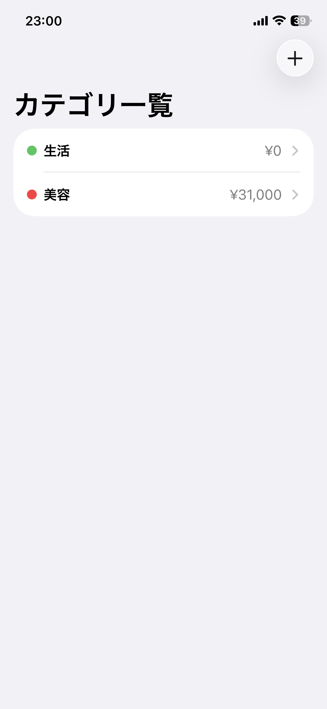
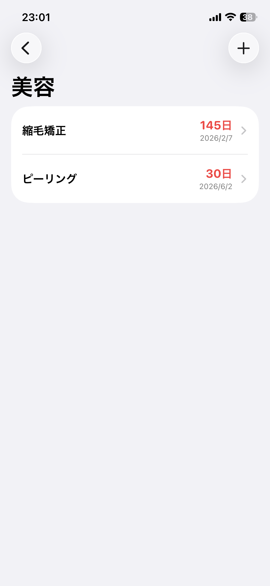
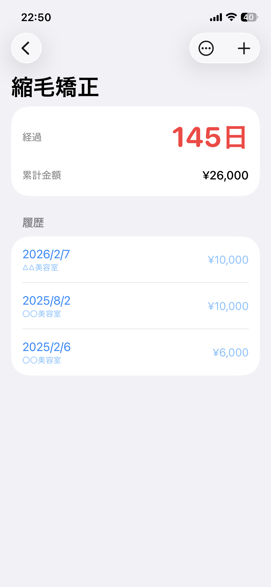
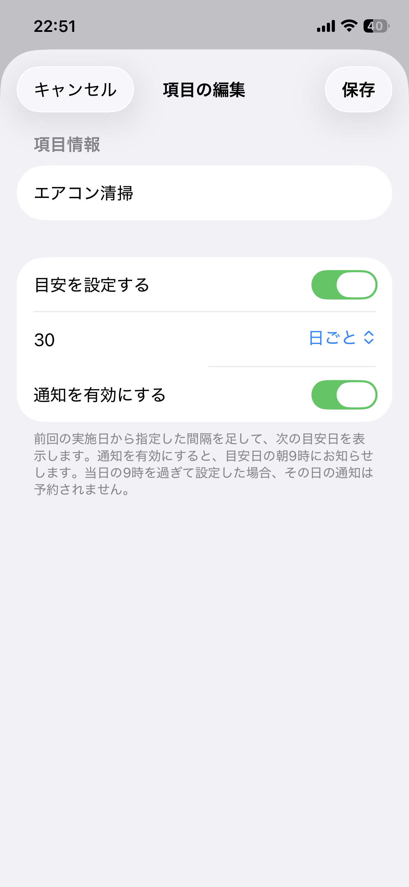
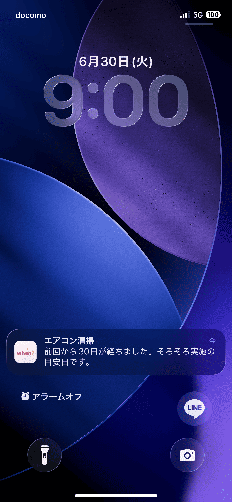
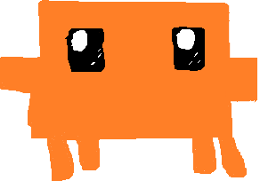
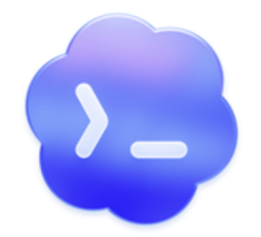

2026年上期 個人目標 レポート
Swiftでネイティブアプリを開発した内容と、 AIを取り入れた新しい開発手法「Vibe Coding」への取り組みをまとめました。
目標
2026年上期の業績評価における目標として、「Swiftで開発したiOSアプリを作成し、GitHubにソースコードを公開する」を設定しました。
| 業績評価 | 目標（課題認識） | 成果イメージ（達成基準） |
|---|---|---|
| 任意設定目標 | Swiftで開発したiOSアプリを作成し、GitHubにソースコードを公開する | |
| アプリ開発スキルの向上 |
※ 2026年上期の目標シートから該当欄を転記
達成状況
| 達成基準 | 結果 | 成果物・根拠 |
|---|---|---|
| Swiftで開発したiOSアプリを作成する | 達成 | 日数経過管理アプリ When Did を開発（02 アプリの概要・04 動作デモ） |
| GitHubにソースコードを公開する | 達成 | github.com/asasuzu/kato-work/tree/main/2026-h1/when-did にて公開中 |
アプリの概要
本目標の成果物として、日数経過管理アプリ When Did を作成しました。 一般的な「締め切りまでのカウントダウン」ではなく、カウントアップ──つまり経過日数の確認を主役にした点が特徴です。
画面は「カテゴリ → 項目 → 項目詳細」の3階層で構成し、項目ごとに目安の間隔と通知を設定できます。




想定しているユースケースは大きく2つあります。
ひとつは、「最後に実施してから何日経ったか」を確認できれば十分なものです。美容室での縮毛矯正のように次回のタイミングを判断したい場合や、ピーリングのように頻度が高くなりすぎないよう管理したい場合など、必ず実施日が決まっているわけではなく、適切な間隔を保つために経過日数を確認したい用途がこれにあたります。
もうひとつは、経過日数に加えて期限設定や通知が必要なものです。定期掃除や熱帯魚の水換えのように、一定のタイミングで必ず実施する必要がある作業がこれにあたります。
開発環境
SwiftUIを中心に、ローカル永続化を前提として構成しました。
| 言語 | Swift 5 |
|---|---|
| IDE | Xcode 26.2 |
| UIフレームワーク | SwiftUI |
| 対応OS | iOS / iPadOS 26.1以降（iPhone・iPad） |
| データ管理 | SwiftData（ローカル保存） |
| 通知 | UserNotifications（目安日の朝9時にローカル通知。設定時点ですでに当日9時を過ぎている場合、その日の通知は予約しない） |
無料アカウント（Personal Team）の範囲と制約
開発は有料のApple Developer Programには加入せず、 無料のApple ID（Personal Team）の範囲で行いました。ローカル通知までは問題なく実装できましたが、無料範囲ならではの制約がいくつか残ります。
- 実機にインストールしたアプリは 7日で起動できなくなり、継続利用には毎週再ビルドが必要。日常的に使うアプリとしては手間がかかります。
- App Store や TestFlight で配布できない（開発用の実機インストールのみ）。
- iCloud（CloudKit）が使えないため、デバイス間の同期が実装できない。
当初は iOS と macOS の間で iCloud 同期するアプリを想定していましたが、同期機能は有料メンバーシップが前提となるため、個人利用でそこまで費用をかける必要はないと判断し、今回は見送りました。
そのため、今回はローカル保存＋ローカル通知までを実装範囲とし、「無料枠でどこまでできるのか」を実際に確かめられたこともひとつの収穫になりました。
動作デモ
アプリの操作動画と、通知が届いた際の画面です。

AIを活用した開発
アプリの開発には AI を積極的に活用しました。実装前は Swift や SwiftUI を一通り学ぶ必要があると思っていましたが、事前に深く勉強しなくても、個人利用には十分なアプリを形にできました。
Vibe Codingとは
Vibe Coding は、2025 年初頭に Andrej Karpathy 氏が提唱した開発スタイルで、自然言語で AI に指示を出しながらコードを生成・修正していく手法です。従来のように一行ずつコードを書くのではなく、「何を作りたいか」を会話形式で伝えながら実装を進める点が特徴です。Claude Code や GitHub Copilot、Codex などのツールの普及により、個人開発でも取り入れやすい方法になりました。
今回の開発では、AI に実装方針やコード案を出してもらい、それを自分の要件と照らし合わせながら取捨選択して進めました。序盤は提案されたコードを自分でファイルに追加・修正しつつ動作を確認し、途中からは Claude Code、Codex のようなファイルを直接編集できるツールも使用しました。
実装に入る前に AI と仕様について対話したことで、自分の中で曖昧だった部分を整理できました。「何を作るか」を言語化して確認するプロセスは、実際の開発現場と同じく重要だと感じました。一方で、ざっくりした指示だけでは意図した形にならないこともあり、AI に任せる部分と、自分で仕様を決める部分の線引きが大切だということも実感しました。


Vibe Codingで作ったツール・ゲーム
日常のちょっとした不便を解消するために、HTML / CSS / JavaScript を使った Web ツールやゲームをいくつか作成しました。
| ツール名 | 作成した経緯 | 技術 |
|---|---|---|
| コード譜エディタ | 趣味で楽器を弾くことがあり、歌詞の上にコードを記載した歌詞カードをもっと手軽に作れたらと思い、作りました。行間や印刷レイアウトを調整しやすくし、キー変更にも対応しています。 | HTML / CSS / JavaScript JSON保存・読み込み |
| ケーキ3等分判定ツール | 「非行少年はケーキを三等分できない」という話を聞き、自分はどうだろうと気になりました。フリーハンドで描いてみたものの客観的に正確かどうかわからないため、正確に測れるツールを作成しました。 | HTML / CSS / JavaScript Canvas API |
| エレベーターゲーム | 会社のエレベーターの待ち時間が気になることがあり、ゲームの中だけでも軽快に動かしてみたいと思い作成しました。 | HTML / CSS / JavaScript ※PC専用（スマホ非対応） |
まとめ・所感
本目標を通じて、個人利用を想定した実用的なアプリを完成させることができました。
あわせて、Vibe Coding を取り入れたことで、日常のちょっとした不便を短時間で解消するツールを気軽に作れるという体験も得られました。セキュリティや大規模公開を前提とするプロダクトには当然しっかりした設計が必要ですが、個人利用のツールであれば、AI を活用することで素早く形にできるのは大きな強みだと感じました。
業務への応用
今回の経験は個人開発にとどめず、業務にも活かしていきたいと考えています。AI を活用し開発スピードを高めることで、お客様のご要望を最適なルートで素早く具現化することを目指します。実装が速くなればその分、テストと検証に充てられる時間が増え、確認を重ねた品質の高い成果物を納品することができます。その結果、お客様のご要望に確実に応えられると考えています。
一方で、スピードを優先するあまりセキュリティへの配慮が欠けることのないよう、AI が提案する設計やコードは内容を理解・確認した上で取り入れる姿勢を徹底していきます。